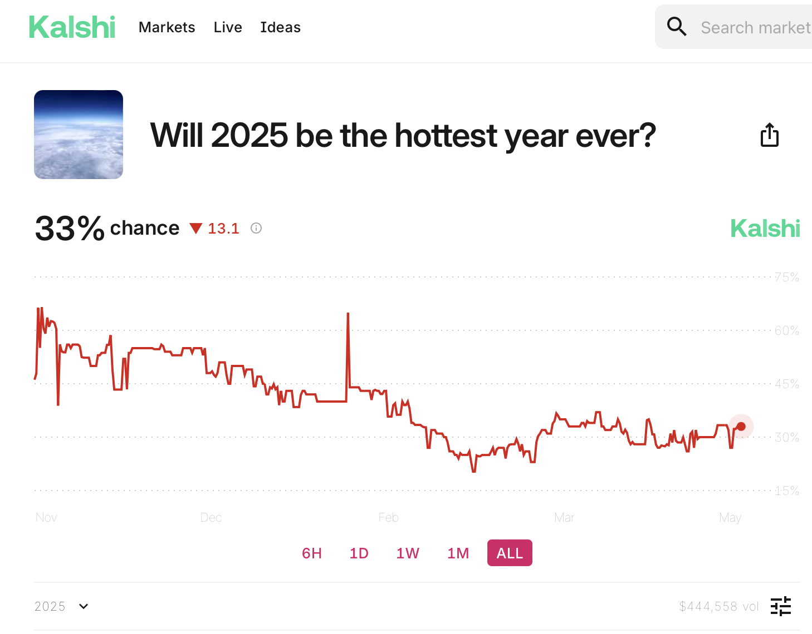

(Sadly, the fun part of the talk is over now, and we are now entering the drudgery of some very formal results)
We have a proposition \(q\)
whose truth value \(\varphi(q)\in\{0,1\}\)
is (as of yet) unknown. We have a population of \(n\) agents
(for simplicity, assume \(n\) is odd),
whose beliefs about \(q\) we denote with \(B_1(q), \ldots, B_n(q)\).
Let \(V(q) \in \{0,1\}\) denote the result of a majority vote taken among the agents.
For each possible truth value of \(q\), \(x \in \{0, 1\}\), the probability of a correct majority vote \(\mathbb{P}(V(q)=x \mid \varphi(q)=x)\)

An exchange economy is an economy in which there are \(k\) commodities and \(n\) consumers \(\{1, \ldots, n\}\), where each consumer \(i\) is described by
A consumption bundle for consumer \(i\) is a tuple of quantities of the commodities in the economy, \(x^i=\left(x^i_1, \ldots, x^i_k\right) \in \mathbb{R}^k_{\geq 0}\).
An allocation \(x=\left(x^i, \ldots, x^n\right) \in \left(\mathbb{R}^k_{\geq 0}\right)^n\) assigns a consumption bundle to each consumer.
An allocation \(x\) in an exchange economy with initial endowments \(\varpi^1, \ldots, \varpi^n\) is feasible if \[ \forall l \in \{1, \ldots, k\}: \sum_{i=1}^n x^i_l \leq \sum_{i=1}^n \varpi^i_l \]
A Walrasian Equilibrium in an exchange economy is a pair \(\left(\bar{x}, \bar{p}\right)\), consisting of an allocation \(\bar{x} = \left(\bar{x}^1, \ldots, \bar{x}^n\right)\) and a price vector \(\bar{p} = \left(\bar{p}_1, \ldots, \bar{p}_k\right)\) such that:
Under the above assumptions:
For each possible truth value of \(q\), \(x \in \{0, 1\}\), the probability of a correct market judgment \(\mathbb{P}(M(q)=x \mid \varphi(q)=x)\)
If we let \(B_i(q)\) take values in the interval \([0,1]\) instead of just in the set \(\{0,1\}\), but keep all the other assumptions the same, then:
A Walrasian equilibrium exists, and the market affirms \(q\) iff the median credence is higher than 0.5, and \(\neg q\) otherwise. That is, the market affirms the correct proposition iff the median credence is on the correct side of the 0.5 mark.
Question: How to translate the competence assumption?
We recover both properties if we assume what (Wollesen forthcoming) calls “minimal fidelity of credences”: Agents’ credences are drawn from a distribution on \([0,1]\) whose median is on the correct side of the 0.5 mark.
If minimal fidelity of credences is satisfied:
For each possible truth value of \(q\), \(x \in \{0, 1\}\), the probability of a correct market judgment \(\mathbb{P}(M(q)=x \mid \varphi(q)=x)\)